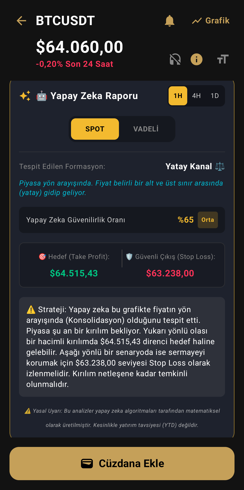
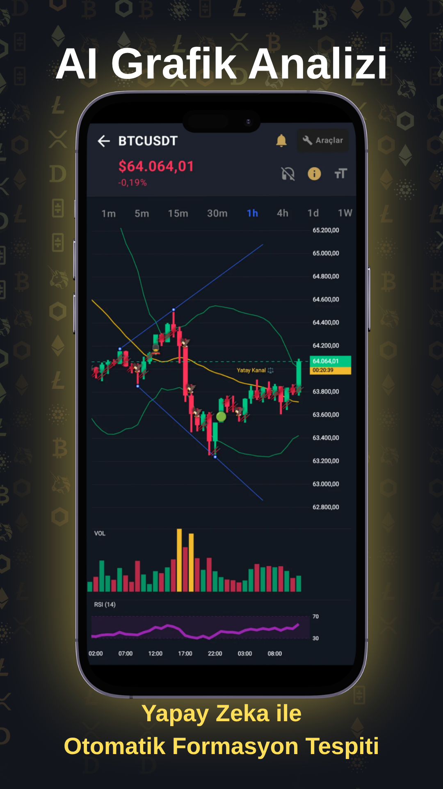
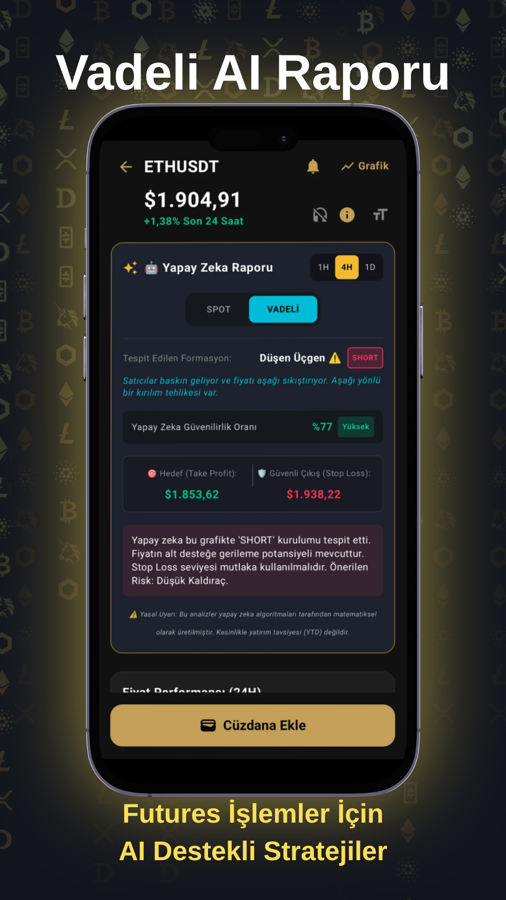
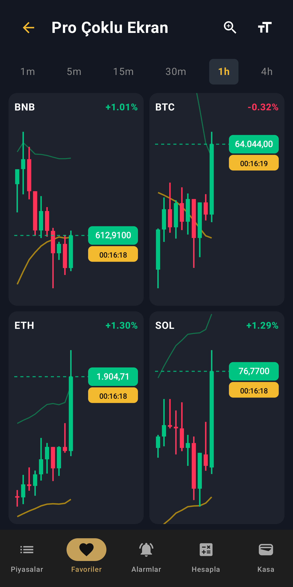
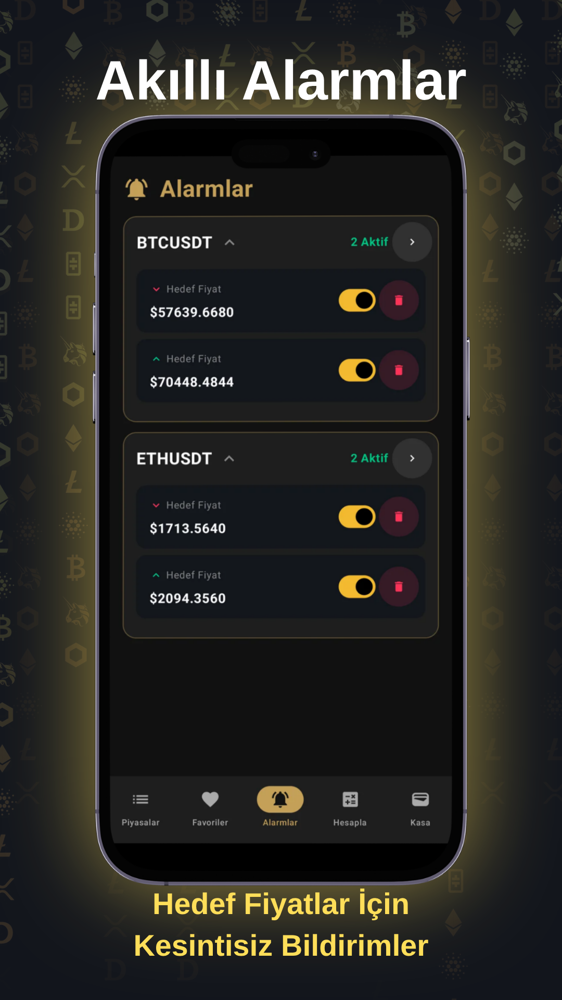
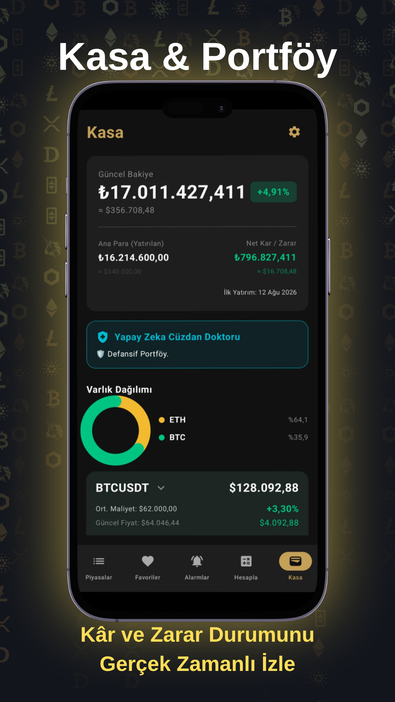
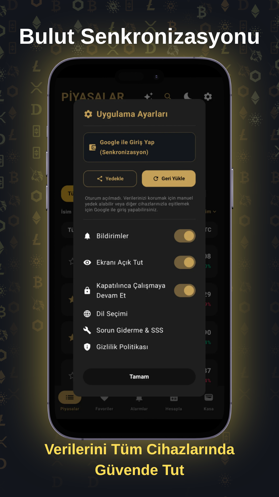
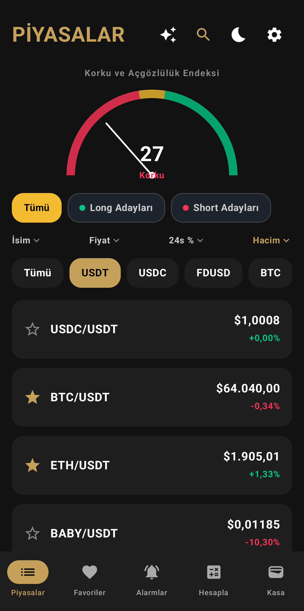

OBO, İkili Dip, Çekiç ve daha fazlası... Kripto piyasasındaki fırsatları AI formasyon tarayıcısı ve profesyonel indikatörlerle herkesten önce yakalayın. 9 dil desteğiyle tüm dünyada.

Bulut senkronizasyonundan, çoklu ekran takibine kadar profesyonel bir trader'ın ihtiyaç duyduğu tüm cephanelik.







Karmaşık tabloları unutun. İhtiyacınız olan tüm veri, sade ve şık bir arayüzde parmaklarınızın ucunda.
Maliyetinizi girin, grafiğin üzerinde şeffaf bir çizgi olarak anlık Kâr/Zarar durumunuzu takip edin. Cüzdan doktoru risk analizinizi yapsın.
İkili Tepe, OBO, Çekiç veya Yutan Boğa. Siz uyurken bile grafikler taranır, formasyon oluştuğunda cebinize bildirim gelir.
Telefonunuz kilitliyken bile arkaplanda çalışır. Uyurken belirlediğiniz oranda kritik bir çöküş yaşanırsa, alarmıyla sizi uyandırır.
Balinaların ve fonların gerçek ortalama maliyetini (VWAP) görerek büyük oyuncularla aynı yönde işlem açın.
Manuel çizimle uğraşmayın. Sistem Fibonacci 0.618 gibi kritik geri çekilme bölgelerini grafikte anında oluşturur.
Piyasa psikolojisinin en net okunduğu Destek (Alıcı Kalesi) ve Direnç (Satıcı Duvarı) seviyelerini otomatik görün.